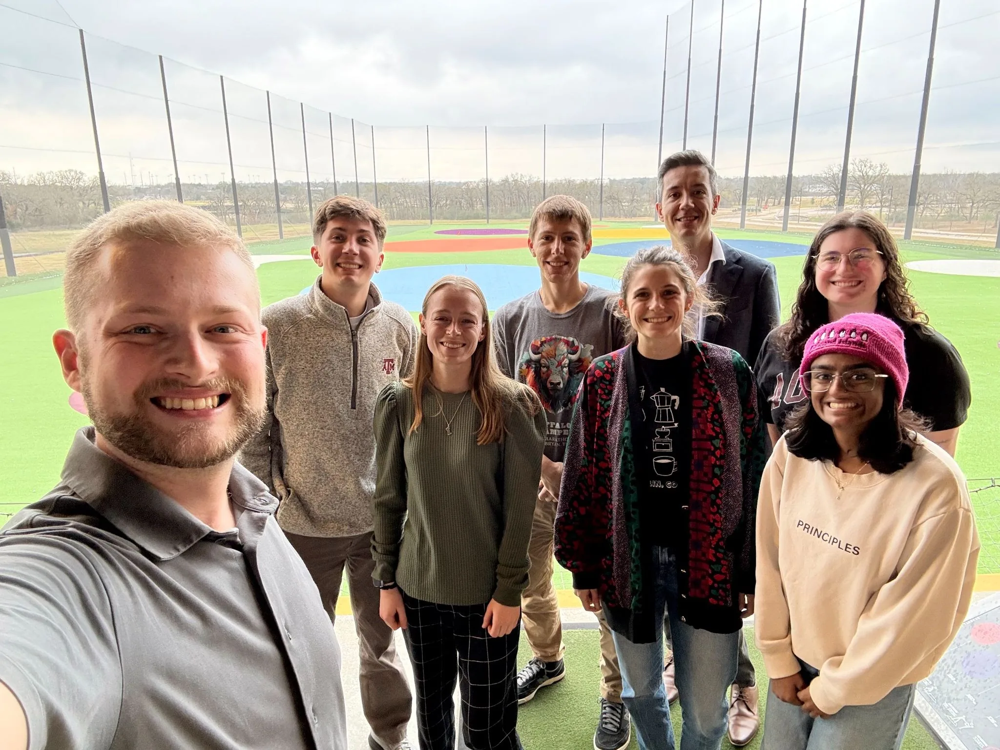

The group at the Cyclotron Institute, College Station, Texas.
Quantum Sensing with Nuclei
We are an experimental nuclear physics group at the Texas A&M University Cyclotron Institute. We apply atomic, molecular and optical techniques — precision lasers, ion traps and mass spectrometry — to stable and radioactive atoms and molecules, and use them to test the Standard Model of particle physics and look for what lies beyond it.
If that sounds interesting, get in touch. We take students at every level, from high school through postdoc, on campus and at the accelerator facilities FRIB and CERN.
Lab notebook
News
Loading news…